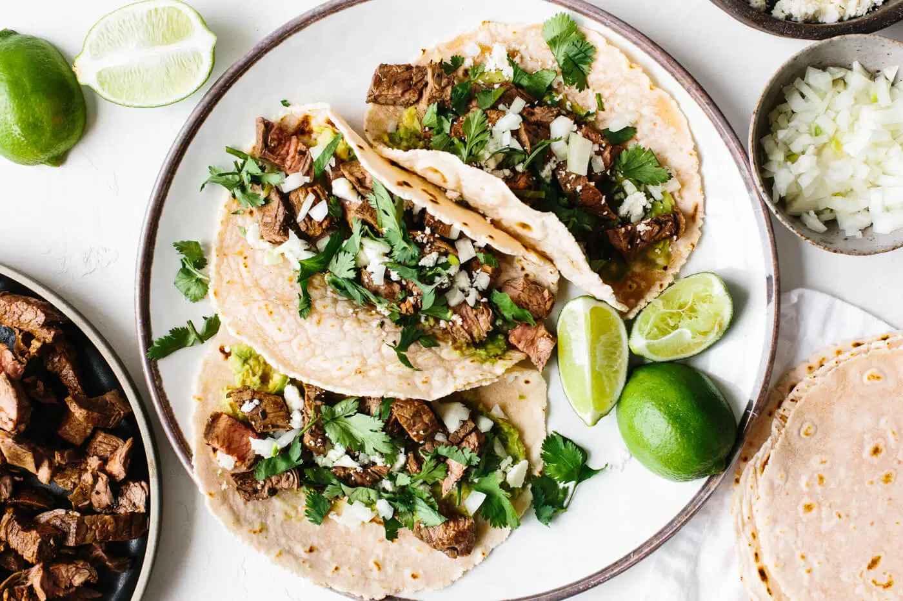

Carne Asada Tacos

Description
Quick and tasty authentic mexican street food, all of the flavour none of
the frills.
Ingredients
For the Carne Asada:
- 1 ½ lbs flank steak
- ⅓ cup olive oil
- 3 limes, juiced
- ½ cup fresh cilantro, chopped
- 4 garlic cloves, minced
- 1 tsp cumin powder
- ½ tsp chili powder
- salt and pepper, to taste
For the Tacos:
- Carne Asada (see above)
- 2 avocados
- 3 tbsp cotija cheese
- 1/3 cup onion, finely diced
- 1/2 cup fresh cilantro, chopped
- 6 tortillas
- limes, for garnish
Steps
- Whisk all of the marinade ingredients together in a small bowl.
-
Add the steak to a glass or non-reactive baking tray and pour the
marinade on top. Ensure both side of the steak are well coated, cover
the baking tray with plastic wrap and marinate for 1-4 hours.
Alternatively, you could marinate in a plastic bag.
-
Heat a grill on medium-high heat. Add the carne asada and cook for 5-7
minutes on each side. Remove the steak to a cutting board and let it
rest for another 5 minutes.
-
Using a sharp knife, slice the carne asada at an angle against the
grain. From there, you can further chop the carne asada into smaller
pieces, if you'd like.
-
Use a spoon to mash the avocado and spread a large spoonful or two onto
each tortilla. Then, top the avocado with chopped carne asada, a
sprinkle of cotija cheese, some diced onion and fresh cilantro. Squeeze
fresh lime juice on top.